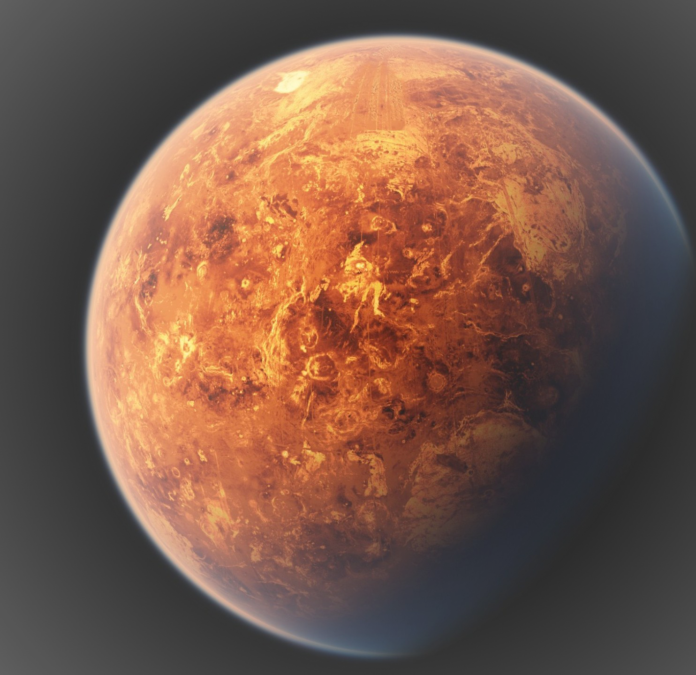

Mars

Mars is the fourth planet from the Sun and the second-smallest planet in the Solar System, being larger than only Mercury. In English, Mars carries the name of the Roman god of war and is often referred to as the "Red Planet".
Like Earth, Mars has differentiated into a dense metallic core overlaid by less dense materials. Scientists initially determined that the core is at least partially liquid. Current models of its interior imply a core consisting primarily of iron and nickel with about 16–17% sulfur.
The core is surrounded by a silicate mantle that formed many of the tectonic and volcanic features on the planet, but it appears to be dormant. Besides silicon and oxygen, the most abundant elements in the Martian crust are iron, magnesium, aluminium, calcium, and potassium. The average thickness of the planet's crust is about 50 kilometres (31 mi), with a maximum thickness of 125 kilometres (78 mi).By comparison, Earth's crust averages 40 kilometres (25 mi) in thickness.
Mars is a terrestrial planet whose surface consists of minerals containing silicon and oxygen, metals, and other elements that typically make up rock. The surface is primarily composed of tholeiitic basalt, although parts are more silica-rich than typical basalt.
| Mass | 6.4171×1023 kg |
|---|---|
| Rotation Period | 1.025 Earth Days |
| Surface Gravity | 3.720 m/s2 |
| Volume | 1.631×1011 km3 |